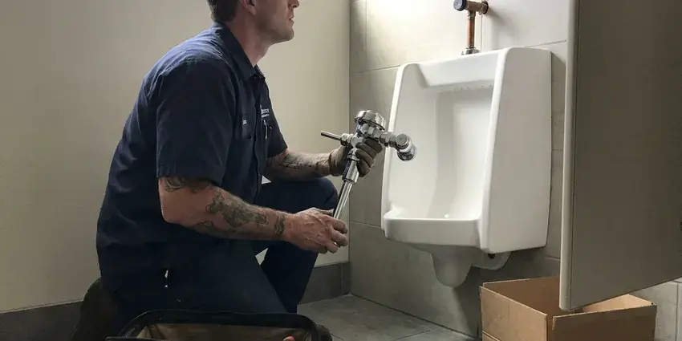

Faucet Installation in Pomona, CA
When you need professional faucet installation in Pomona, CA, FKM Plumbing delivers quality workmanship and efficient service for your home's plumbing needs.
- Prompt, Local Service
- Licensed Plumbers
- Workmanship Guarantee
- Fast Service Available

Professional Faucet Installation Services Available in Pomona, CA.
Call FKM Plumbing today for reliable and prompt plumbing services for your home.
Professional Faucet Installation for Kitchens and Baths in Pomona, CA
FKM Plumbing works with single-hole, centerset, widespread and wall-mount faucets, plus touchless and pot filler models. We confirm the faucet fits your sink holes and countertop thickness before installation. If you are remodeling, we work with your countertop installer for perfect timing.
Our expertise includes:
- Replace old, dripping faucets
- Install all major faucet brands
- Kitchen and Bathroom Faucet Upgrades

Additional Bathroom Plumbing Services in Pomona, CA
From toilets to showers, our bathroom plumbing team in Pomona, CA repairs, installs, and replaces every fixture with clean, code-compliant work.


Customers
Why Choose FKM Plumbing for Faucet Installation in Pomona, CA?
Many faucet leaks start with a rushed install, like cross-threaded connections or reused old supply lines. We use new parts and proper technique so your faucet stays dry under the sink.
- Proper Fit, We confirm hole count, spacing and deck thickness before mounting.
- Quality Tools, We use professional-grade tools for precise and durable faucet installations.
- Local Expertise, Our team knows the specific plumbing challenges and water conditions in Pomona, CA.
Citywide Coverage
We install faucets in homes throughout Pomona, from small condos to large custom homes. Booking is easy, and we work around your schedule or remodel timeline.
Experienced Team
Our plumbers have years of experience with all types of faucet installation, from basic replacements to complex custom fixture setups. They are trained to handle the many plumbing configurations common in Pomona homes.
Safety-First Approach
We shut off water, protect cabinets and countertops and keep work areas clean. New shutoff valves make it simple to isolate the faucet later.
Trusted Certified Pomona Plumbing Services Professionals
At FKM Plumbing, we take pride in providing licensed, certified plumbing services throughout Pomona, CA. Backed by leading industry credentials, our experienced plumbers combine technical skill with genuine customer care. Whether it is repair, installation, or maintenance, we follow strict safety and quality standards to deliver lasting results you can trust.
Call Us Now PHCC Plumbing Contractor Recognition
PHCC Plumbing Contractor Recognition Better Business Bureau (BBB) Accreditation
Better Business Bureau (BBB) Accreditation Angi Certified Pro
Angi Certified Pro ISO 9001 Quality Management Certification
ISO 9001 Quality Management CertificationReliable Faucet Installation Services in Pomona, CA
Specific Faucet Brand Installation in Pomona
We have extensive experience installing faucets from all major brands, including Moen, Delta, Kohler, American Standard, and Pfister. Each brand can have unique installation requirements, and our plumbers are familiar with the specific components and procedures. We make sure your chosen brand's faucet is installed according to manufacturer specifications, preserving its warranty and performance in your Pomona home.

Faucet Upgrade and Modernization in Pomona, CA
Beyond simple replacement, we help homeowners upgrade their faucets for better function and style. This might involve installing a touchless faucet, a filtered water dispenser, or a new finish to match updated décor. We check your existing plumbing to ensure compatibility and provide honest advice on the best options for your Pomona, CA home, ensuring your new faucet meets modern standards.
Touchless Faucet Installation in Pomona
Touchless faucets from Moen, Delta and Kohler use sensors, solenoids and either batteries or a plug-in power supply. We mount the control box under the sink where it stays dry and easy to reach. We test sensor range and flow so the faucet responds every time. Hard water can affect solenoids over time, so we add an inline filter when it makes sense.
Pot Filler Installation in Pomona
A pot filler near the range lets you fill large pots without carrying them across the kitchen. We run a new cold water line to the wall behind the cooktop and install a shutoff valve. The faucet is mounted securely and checked for leaks. It is a popular upgrade in kitchen remodels.
Outdoor Faucet Installation in Pomona
Outdoor faucets, also known as hose bibs, are important for garden and exterior cleaning. We install durable outdoor faucets built to withstand local weather. Freezing pipes are rare in most of Southern California, and many homes have exposed outdoor plumbing that would never pass in a harsher climate. Our installations include proper backflow prevention where required by Pomona code, protecting your drinking water from contamination. We use sturdy materials to ensure longevity and prevent leaks.
Laundry and Utility Faucet Installation in Pomona
Laundry sinks and utility tubs need sturdy faucets that handle hot water and heavy use. We install wall-mount and deck-mount utility faucets with hose threads and integrated vacuum breakers. Supply lines are secured and tested. A good utility faucet makes cleanup tasks a lot easier.
Utility Sink Faucet Installation in Pomona, CA
Utility sinks in laundry rooms or garages need sturdy, functional faucets. We install faucets that can handle heavy use and provide the necessary water flow for these demanding areas. Our plumbers ensure that all connections are robust and that the faucet is securely mounted to prevent any wobbling or leaks, which can be especially damaging in less-frequented utility spaces in Pomona homes.

Wall-Mount Faucet Installation in Pomona, CA
Wall-mount faucets need a rough-in valve inside the wall, so they are best installed during a remodel. We set the valve at the right height and depth for your sink and finished wall surface. Once tile is complete, we install the trim and spout. This style saves counter space and gives a clean look.
Faucet Installation Near Me in Pomona, CA
Looking for faucet installation near me in Pomona, CA? FKM Plumbing is your local plumbing expert, ready to serve your neighborhood promptly and efficiently. We understand the plumbing needs of Southern California homes and provide timely, professional service.
When you search for faucet installation near me, you want someone dependable and fairly priced. FKM Plumbing installs faucets throughout Pomona with new supply lines and careful testing. Most installs are done in roughly an hour.
FKM Plumbing at a Glance
- Licensed and insured plumbers serving Pomona, CA
- Same-day appointments and 24/7 emergency response
- Upfront, flat-rate pricing before work begins
- 4.8-star rated by 754+ Southern California customers
Pomona Map
Pomona Information
- Population
- 145,502
- Area codes
- 909/626/714
- Service area
- Pomona and communities within 40 miles
- Nearby
- Upland, Chino, Chino Hills, West Covina
Hard water shortens the life of tankless units, valves, and appliances, which is why many homes in Southern California install softeners or scale filters. That is why proper faucet installation matters for homes in Pomona, CA, where secure, well-made connections are essential to preventing leaks.
Expert Services
Trust our professionals for reliable FKM Plumbing solutions in Pomona, CA.
Our Specialized Plumbing Services in Pomona, CA
At FKM Plumbing, we provide a complete range of plumbing services across Pomona, CA. From leak detection to full system installations, our team ensures fast, precise, and affordable service for both residential and commercial properties. Explore our core services below:


How Our Faucet Installation Process Works in Pomona, CA
We follow a clear, step-by-step approach to deliver a professional and lasting faucet installation for your home in Pomona, CA.
Request a Quote
Contact us at (213) 871-0701 to discuss your faucet installation needs. We will gather information about your project and schedule a convenient time for an on-site assessment or provide an initial estimate.
On-Site Assessment
Our plumber will visit your home to look over your current setup, confirm your faucet choice, and provide a precise, upfront quote for the installation. We will answer any questions you have.
Professional Install
We will carefully remove your old faucet, prepare the area, and install your new fixture with precision. All connections are secured, and the system is thoroughly tested for leaks and proper function.
Frequently Asked Questions About Faucet Installation in Pomona
The cost of faucet installation in Pomona, CA typically ranges from $150 to $400, depending on the type of faucet, complexity of the installation, and any necessary changes to existing plumbing. This price usually includes labor but not the cost of the new faucet itself, which can vary widely.
Yes. Our skilled plumbers are experienced in installing various specialized faucets, including touchless kitchen faucets, pot fillers, filtered water dispenser faucets, and more. Just let us know your preferences, and we will ensure it is installed correctly and works properly.
While some homeowners attempt DIY faucet installation, it can be harder than it looks. Improper installation can lead to leaks, water damage, and issues with water pressure or drainage. Hiring a professional means the job is done correctly, follows plumbing codes, and includes a warranty on labor, saving you potential headaches and expensive repairs down the road.
If your new faucet installed by FKM Plumbing starts leaking, please contact us immediately at (213) 871-0701. We will quickly send a plumber to inspect the issue and make any necessary adjustments or repairs under our service warranty, ensuring your satisfaction.
If your current faucet has internal blockages or a faulty aerator, a new faucet can improve water pressure at that specific fixture. However, if the low pressure is a whole-house issue, a new faucet alone will not fix the problem.
Faucets carry manufacturer warranties, often lifetime for many brands. We guarantee our installation workmanship and will return if a leak is caused by our work.
Yes, we can install filtered water faucets, including dedicated drinking water faucets and those built into your main kitchen faucet. These installations often involve connecting to a separate filtration system under the sink.
It depends on your sink's hole count and spacing. Single-hole faucets often include a deck plate to cover extra holes. We help you choose a faucet that fits.
What People Are Saying About Our Plumbing Experts?

Mark T.
When our office needed drain cleaning, FKM Plumbing provided quick, reliable service. The plumber arrived on time and made sure every drain flowed perfectly before leaving. Very satisfied.
Drain Cleaning · Yorba Linda, CA
Laura S.
I scheduled a water heater replacement, and the team made the process smooth and affordable. The new unit works perfectly, and they cleaned up after completing the job.
Water Heater Replacement · Yorba Linda, CA
Patricia H.
We had a slab leak that two other companies could not find. FKM Plumbing located it in under an hour, explained our options, and the price matched the quote to the dollar.
Slab Leak Repair · Pomona, CA
Daniel K.
A pipe burst at 11 pm and they actually answered. The plumber showed up within the hour, shut everything down, and had us back to normal the next morning. Could not ask for more.
Emergency Plumbing · Pomona, CA
Robert G.
The trenchless sewer replacement saved our front yard. They walked us through the camera inspection footage first so we knew exactly what we were paying for.
Sewer Line Replacement · West Covina, CASofia M.
Two new toilets installed in one visit, no mess left behind, and the tech even adjusted a faucet he noticed was dripping. Fair pricing and really friendly.
Toilet Installation · Ontario, CA